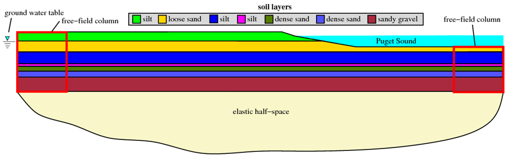
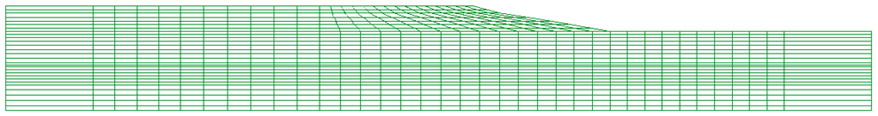
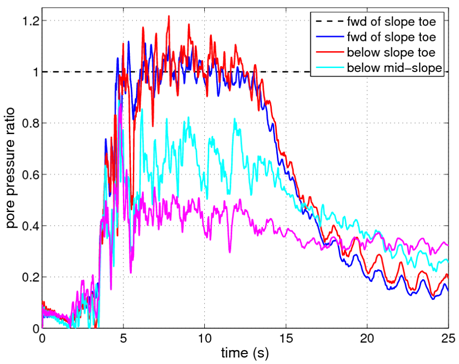

This article describes the OpenSees implementation of an effective stress analysis of a slope which is subject to a seismic event. The slope is modeled in two-dimensions and it is assumed that the slope is underlain by an elastic half-space. The free-field response of the soil is considered through the use of massive columns of soil with periodic boundary conditions located at both ends of the model. Nine-node quadrilateral elements with both displacement and pore pressure degrees of freedom enable the model to track changes in pore pressure and effective stress during the course of the analysis. A Lysmer-Kuhlemeyer (1969) dashpot is utilized to account for the finite rigidity of the underlying elastic medium.
This article also discusses the use of the tool GiD as a means for post-process visualization of the results of the analysis. Files are provided which convert the recorded output from OpenSees into a format which can be read by GiD and the processes behind this are briefly discussed. The pre-processing capabilities of GiD, and the application of these capabilities to the generation of the input file for this example, are discussed in a separate example, GiD ProblemTypes for 2D Slope Analysis Input File Generation. The GiD tool can be downloaded from http://gid.cimne.upc.es/download.
Note: Some of the details of this analysis are shared with the Effective Stress Site Response Analysis of a Layered Soil Column example posted in the Practical Examples area of this manual. The user is referred to that example for further information on details which may be omitted or quickly explained here.
Provided with this article are several files. Files which are required for the analysis are indicated. The files include:
- The example input file, slopeAnalysis2Deff.tcl (required for analysis)
- The velocity time history of the selected earthquake record, velocityHistory.out (required for analysis)
- A series of Matlab scripts (flaviaWriter.m, dispFlavia.m, porePressFlavia.m, ppRatioFlavia.m, stressFlavia.m) which can be used to reformat the recorded displacement, pore pressure, and stress data into a file which can be read by GiD for post-process visulization. Non-Matlab users may find the process represented by these files useful in creating an alternative means for accomplishing this reformatting.
- A Matlab script, processMotion.m, which takes a particular acceleration time history, in this case the file GilroyNo1EW.out, and converts it into a velocity time history through numerical integration using the trapezoidal rule.
All of the files mentioned above can be downloaded by clicking here.
To run this example, the user must download the input file, slopeAnalysis2Deff.tcl, and the velocity time history file, velocityHistory.out, and place them in a single directory. Once this has been done, the user can then run the analysis. The additional files described above are not essential to the analysis. They are provided to demonstrate how to use the GiD tool to visualize results from this type of analysis.
Model Description

The analysis discussed in this article is for the site shown in Fig. 1 above. There are several layers of cohesive and cohesionless material which make up this site, and the site is partially submerged below a body of water. The groundwater table in the portion of the site away from Puget Sound is assumed to have a constant elevation. The entire site is underlain by an elastic half-space, allowing some of the energy imparted by the seismic event to be removed from the site in a manner consistent with the existence of layer of bedrock below the slope site. The elastic half-space is modeled using a Lysmer-Kuhlemeyer (1969) dashpot in a similar manner to that used in the effective and total stress site response examples posted in the Practical Examples section of this manual.
Mesh Geometry
The input file for this example analysis, slopeAnalysis2Deff.tcl, was generated using the GiD problemtype UWnineQuad2Dup.gid, which is provided and discussed in a separate example, GiD ProblemTypes for 2D Slope Analysis Input File Generation. Using this problemtype, it is possible to create the mesh geometry visually in GiD, and export this information, along with additional conditions such as nodal fixities and material assignments, into an input file which can be read by OpenSees. Further details into this process can be found in the GiD ProblemTypes for 2D Slope Analysis Input File Generation example.
The mesh created for this example using GiD as a pre-processor is shown in Fig. 2. The use of the GiD tool greatly simplifies mesh-generation for 2D problems as compared to creating the nodes using loops inside the input file. The benefit is especially evident when mesh modifications or refinement are necessary.

The formulation of the nine-node quadrilateral elements used in this example necessitates care in the number of degrees of freedom which are currently in the domain when defining certain aspects of the model. The corner nodes of the elements must be created in a domain which considers three degrees of freedom, while the interior nodes of the elements must be created in a domain which considers only two degrees of freedom. This is also true of the fixities, masses, and loads applied to these two sets of nodes. Further discussion on the nine-node quadrilateral elements is available in the example, Effective Stress Site Response Analysis of a Layered Soil Column.
Boundary Conditions
The nodes at the base of the mesh are fixed against vertical translation only. The technique used to model the underlying elastic half-space necessitates that these nodes be left free to displace in the horizontal direction, however, the nodes on the base of the model are all given equalDOF for horizontal displacements. The pore pressure degree of freedom is fixed for all nodes on the upper boundary of the model and/or above the groundwater table. Fixing this degree of freedom creates a drainage path for the water in the adjacent elements and restricts the pore pressure in these locations to zero. These two sets of boundary conditions are the only fixities applied to the model.
In the horizontal direction, the model only represents a small section of a presumably infinite (or at least very large) soil domain. To ensure that free-field conditions exist at the horizontal boundaries of the model, the elements in these locations (the free-field columns indicated in red in Fig. 1) are given increased thickness to ensure that they are significantly more massive than the elements in the interior of the mesh, and the displacement degrees of freedom for the nodes on either side of these columns are tied together using equalDOF to create periodic boundary conditions. When the horizontal excitation is applied to the model, the reaction of these massive columns should be the free-field response. To ensure that the critical portions of the model, such as the slope in this example, are not affected by the horizontal boundaries, the free-field columns must be located sufficiently far away from the critical regions.
Material and Element Definitions
The soil constitutive behavior is modeled using the PressureDependMultiYield02 nDMaterial object for the cohesionless material and the PressureIndependMultiYield nDMaterial object for the cohesive material.
Note: The mass density input values for the material objects should be total mass densities, i.e. above the groundwater table, the mass density should reflect dry or moist conditions, and below the groundwater table, the mass density should be the saturated value. For elements with free pore pressure degrees of freedom (those below the water table), the 9_4_QuadUP element computes the effective mass density using the input value from the material object and the fluid mass density specified during the element generation.
Included with the material definitions for each soil layer are additional parameters which are used by the 9_4_QuadUP element. These include the element thickness, the horizontal and vertical body forces on the element, the undrained bulk modulus, and the horizontal and vertical permeabilities. Each layer of soil is given appropriate values for these parameters. The elements in the free-field columns are given increased thickness here.
Note: Gravity must be incorporated into an analysis using the 9_4_QuadUP element in a manner which differs from that used for the standard four node quad element. With the four node quad element, gravity is typically considered through the use of body forces which represent the unit weight of the soil. In the case of the nine node quad element, the body forces should not be the unit weights, instead they should have magnitudes equal to the components of gravity only.
The 9_4_QuadUP element should be defined in the following manner:
element 9_4_QuadUP eleID nodei j k l m n p q r thickness matID uBulk fMass hPerm vPerm hBody vBody
where uBulk is the
undrained bulk modulus, fMass is the fluid mass
density, hPerm and vPerm are
the horizontal and vertical permeabilites, and
hBody and vBody are the
horizontal and vertical body forces. The nodal connectivity pattern
matches that shown in Fig. 3. The creators of the 9_4_QuadUP element
recommend an undrained bulk modulus which is equal to the bulk modulus
of the fluid (2.2e6 kPa for water) divided by the porosity of the soil
layer. In this example, the fluid is water, therefore, the fluid mass
density for each layer is set to 1.0 Mg/m^3.
The permeabilities for all of the elements are initially set to 1.0 m/s to ensure that hydrostatic conditions exist after the application of gravity in the model. If the permeability of a particular layer is too low, it may take many gravity analysis steps in order to reach hydrostatic pressure conditions. Prior to the application of the ground motion, the permeabilities of each soil layer are updated using the updateParameter command to their respective assigned values so pore pressure generation during the horizontal excitation is captured appropriately. The usage of the updateParameter command seems to differ from that documented here. Parameter tags must be defined for each permeability parameter (horizontal and vertical) for each element. Then these tags can be used to update the corresponding parameters.
An example of the parameter update process for two elements is provided here. To set the parameter tags:
- tag eleTag parameterType
parameter 10001 element 1 vPerm parameter 10002 element 1 hPerm parameter 10003 element 2 vPerm parameter 10004 element 2 hPerm To update the permeability parameters:
- tag parameterValue
updateParameter 10001 1.0e-4 updateParameter 10002 1.0e-4 updateParameter 10003 1.0e-5 updateParameter 10004 1.0e-5 It seems to help to make the parameter tags different from any of the other tags used in the model (e.g. material, element tags), hence the numbers in this example start at 10001 and increase incrementally. As might be expected, the parameter tags must be defined before the parameters can be updated.
Lysmer Dashpot Definition
A single zeroLength element is used to define the Lysmer-Kuhlemeyer (1969) dashpot. One end of the dashpot element is fixed against all displacements, while the other is given equalDOF with the soil node in the lower left hand corner of the model. The node in the lower left hand corner of the model is the master node for the horizontal equalDOF assigned to the nodes at the base of the mesh.
The viscous uniaxial material is used to define the constitutive behavior of the Lysmer-Kuhlemeyer (1969) dashpot in the horizontal direction. This material model requires a single input, the dashpot coefficient, c. Following the method of Joyner and Chen (1975), the dashpot coefficient is defined as the product of the mass density and shear wave velocity of the underlying medium, which, in this example, is assumed to have the properties of bedrock. The dashpot coefficient must be scaled by the area of the base of the model to ensure that equivalent loading is applied.
Note: This area factor must take into account the increased thickness of the free-field columns and must be entered manually into the input file via the variable, $baseArea ; GiD does not calculate this factor.
Incorporating the Body of Water into the Model
As shown in Fig. 1, a portion of the site modeled in this example is submerged beneath Puget Sound. To incorporate the dynamic effects of the water on the site without altering the effective stresses in the soil elements, each node on the boundary of the mesh which is below the body of water is assigned a nodal mass using the mass command. For the nodes on the level surface, the horizontal mass is set to zero and the vertical mass is set as the mass of the volume of water 'supported' by the node. For each respective node, this volume is bounded by the depth of water above the node, half the distance to adjacent nodes, and the element thickness. The nodes on the slope are assigned horizontal and vertical mass components based on the geometry of the slope.
Note: These values must be manually input in to the analysis, GiD does not automatically calculate them. Also, care must be taken as to how many degrees of freedom exist at each node. In this example, the nodes with three degrees of freedom are assigned masses separately from the nodes with two degrees of freedom.
Gravity Analysis and Recorders
The first step in the analysis is to apply gravity to the model. This ensures that the distributions of pore pressure and effective stresses in the model are appropriate for the site conditions prior to the application of a ground motion. Separate recorders are set up so the gravity analysis information is distinct from any post-gravity results. Nodal displacements, accelerations, and pore pressures are recorded along with the elemental stresses and strains at each of the nine Gauss points.
The gravity analysis is conducted in two parts. In the first part, the soil elements are considered to be linear elastic. This is accomplished by setting the material stage to be zero for each material object using the updateMaterialStage command. The second part of the gravity analysis considers elastoplastic constitutive behavior by setting updating the material stage to one for each material object.
The elastic portion of the gravity analysis is run as a transient analysis with very large time steps, thus simulating a static analysis while avoiding the conflicts which may occur when mixing static and transient analyses. Gravity is applied for 10 steps with a time step of 500, and 10 steps with a timestep of 5000. This is done to ensure that hydrostatic pore pressure conditions are achieved. The plastic portion of the gravity analysis is run using smaller time steps to aid in convergence, and because drastic, free-vibration causing displacements, do not typically occur in this stage of the analysis.
Horizontal Analysis and Recorders
Using the method of Joyner and Chen (1975), dynamic excitation is applied as a force time history to the base of the soil column, at the node which shares equal degrees-of-freedom with the Lysmer-Kuhlemeyer (1969) dashpot. This force history is obtained by multiplying the velocity time history of the recorded ground motion by the mass density and shear wave velocity of the underlying bedrock layer and the area of the base of the model (This factor is the same as the previously discussed dashpot coefficient). This technique considers the finite rigidity of the underlying layer by allowing energy to be radiated back into the underlying material.
The force history is applied to the model as a Path TimeSeries object using a Plain load pattern object. The actual force applied to the node in each time step is the product of the load factor indicated in the pattern object, the additional load factor included in the timeSeries object, and the value found in the file, velocityHistory.out, at that time step. The load factor included in the timeSeries object is used to create a force history from the velocity history found in the namesake file.
The same items that are recorded during the gravity analysis are recorded here, the only difference is the file names are different so that the two analyses are recorded separately. The recorder time step is set as twice the analysis time step to reduce the size of the output files.
For improved success in completing the analysis in a timely manner, a convergence loop is included in the input file. If convergence is not reached, the time step is reduced in half and the analysis continues. The loop is set such that this process can occur twice before the analysis is deemed over. If the user encounters a problem where two reductions in the initial time step do not create a time step small enough for convergence, it is recommended that a smaller initial time step be set.
The remaining details of the analysis are very similar to those discussed in the Total Stress Site Response Analysis of a Layered Soil Column and Effective Stress Site Response Analysis of a Layered Soil Column examples.
Post-Processing of Results in GiD
Visualization of the results of a 2D analysis, such as that presented in this article, can be accomplished using the GiD tool. Any quantity that is recorded at a node (e.g. displacement) or a Gauss point (e.g. stress) can be read into GiD as post-process results. GiD is then able to produce various plots and animations with which to evaluate the results of the analysis. Information on how to use the post-processing capabilities of GiD for this purpose can be found in the GiD manuals.
For the purposes of efficiency, the post-processing in GiD is conducted under the assumption that the data corresponds to four node quadrilateral elements. The nine node quadrilateral elements used in this example only have pore pressure degrees of freedom at the corner nodes. In order to visualize contour plots of pore pressure in GiD for nine node elements, it is required that pore pressure values be assigned to every node in the element. It is not difficult to map the pore pressures to the interior nodes using the values at the corner nodes, however, there are many elements and many time steps, and this process would become very expensive computationally. Instead of taking this approach, only the recorded nodal quantities at the corner nodes and the recorded elemental quantities at the corner Gauss points are used for post-process visualizations. This is accomplished by creating a post-process mesh which shares the geometry of the original mesh, but for which the elements only have four nodes. While this approach somewhat alters the resolution of the data as recorded from the nine node elements, it is sufficient for the purpose of visualization.
Several Matlab scripts have been provided which sort the output from the OpenSees recorders into a format that can be read into GiD. These files, flaviaWriter.m, dispFlavia.m, porePressFlavia.m, ppRatioFlavia.m, and stressFlavia.m, are available for download with the rest of the files for this example here. This series of files creates a GiD post-process results file given the default name renameMe.flavia.res by running the main file, flaviaWriter.m in Matlab. The individual quantities such as displacement, pore pressure, and stress are handled by separate functions, allowing the user to only write a results file for quantities of interest. The flaviaWriter.m function requires several input arguments. In order, these are the material type as a string ('elastic' for elasticIsotropic material, 'PDMY' for pressureDependMultiYield or pressureDependMultiYield02, 'PIMY' for pressureIndependMultiYield, or 'J2' for J2Plasticity), the analysis time step, and the number of gravity steps used in the analysis. These arguments ensure that the results are correctly integrated into the post-process results file.
A post-process mesh file is generated automatically by the input file for the slope analysis as generated by the UWnineQuad2Dup problemtype discussed in the GiD ProblemTypes for 2D Slope Analysis Input File Generation example. This file simply lists the nodes with their locations and the elements with their nodal connectivities. The post-process mesh file which is created is given the default name renameMe.flavia.msh.
To visualize the results in GiD, perform the following steps:
- Run the analysis in OpenSees.
- Generate the post-process results file using the supplied Matlab scripts.
- Save a blank project in GiD with any desired name (e.g. slopeAnalysis.gid).
- Place the post-process mesh and results files (renameMe.flavia.msh and renameMe.flavia.res) in the GiD project directory.
- Change the names to match the project name (e.g. slopeAnalysis.flavia.msh and slopeAnalysis.flavia.res).
- Open the project and enter post-process mode.
Representative Results
The slope analysis of this example was intended to evaluate the stability of the slope after the development of cyclic mobility in the loose sand layer. The ability of the model to capture the development of this cyclic mobility is demonstrated here for three purposes: (1) to demonstrate the ability of OpenSees to model this type of behavior, (2) to demonstrate the post-processing capabilities of GiD, and (3) as a means to verify the proper download and implementation of the example files.
Fig. 4 shows the shear stress-strain response for the center Gauss
point of two elements from the loose sand layer of the model. One of the
elements is located just in front of the toe of the slope, and the other
is located somewhat below the top of the slope. As shown, it appears
that cyclic mobility occurs at the slope toe location, as the shear
strains become very large and plastic behavior is clearly visible, while
it does not appear to occur at the other location, where the response
remains largely elastic. For verification purposes, the two elements in
these plots are elements 458 (slope top) and 729 (slope toe).

To verify the presence of cyclic mobility in the model, the pore pressure ratios, taken as the ratio of the excess pore pressure to the initial vertical effective stress, at several locations in the loose sand layer are examined. Fig. 5 shows these computed ratios. As shown, at the two locations in front of the slope toe, the pore pressure ratios reach 1.0, indicating the initiation of initial liquefaction. The observed pore pressure behavior corresponds well with the behavior observed in the shear stress strain response. The considered locations range between the middle of the slope to in front of the toe of the slope. For verification purposes, these nodes are numbers 747, 914, 996, and 1079. Fig. 6 shows a contour plot of the slope region during the strongest portion of the applied ground motions. As shown, the largest pore pressure ratios develop in front of the slope toe where the vertical effective stress is at a minimum for this layer.

To demonstrate how the observed initiation of liquefaction affects the stability of the slope, a second analysis was conducted in which the permeabilities of the layers were increased. In this analysis, large excess pore pressures do not develop and cyclic mobility is not observed. A comparison of the displacement histories of several nodes inside the loose sand layer in each analysis is shown in Fig. 7. In this plot, the original analysis (with cyclic mobility) is represented as solid lines, while the second analysis (without cyclic mobility) is represented using dashed lines. As shown, for all of the locations the displacements which develop for the case where liquefaction occurred are larger. The response of the node which is to the left of the slope is only slightly different, however, the period-elongating effects of the liquefaction can be observed. For verification purposes, the plotted nodes are numbers 1009, 1301, 1755, and 2713.
References
- Joyner, W.B. and Chen, A.T.F. (1975). "Calculation of nonlinear ground response in earthquakes," Bulletin of the Seismological Society of America, Vol. 65, No. 5, pp. 1315-1336, October 1975.
- Kramer, S.L. (1996). Geotechnical Earthquake Engineering. Prentice Hall, Upper Saddle River, NJ.
- Lysmer, J. (1978). "Analytical procedures in soil dynamics," Report No. UCB/EERC-78/29, University of California at Berkeley, Earthquake Engineering Research Center, Richmond, CA.
- Lysmer, J. and Kuhlemeyer, A.M. (1969). "Finite dynamic model for infinite media," Journal of the Engineering Mechanics Division, ASCE, 95, 859-877.
Example prepared by: Christopher McGann and Pedro Arduino, University of Washington